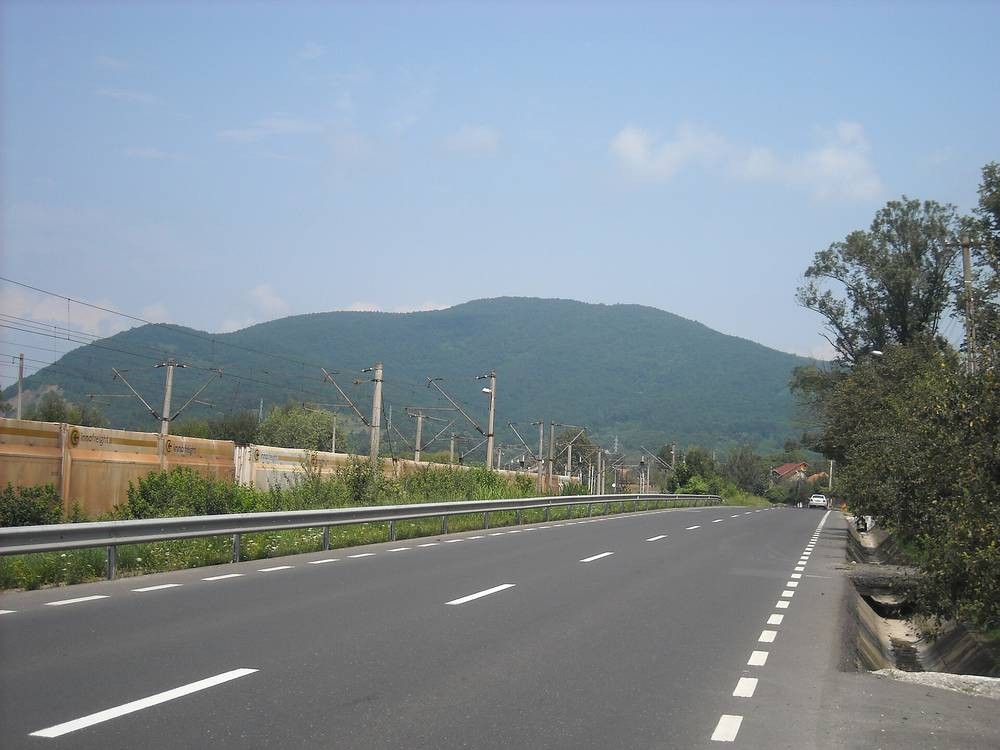

루마니아 잠 면, 정의로운 전환 에너지공동체 참여 가구 모집…에너지 빈곤 가구 먼저, 11월 20일 마감

후네도아라주 잠 면사무소, 집 소유 주민 대상 등록…최근 12개월 전기요금 고지서 내야, 등록이 곧 지원 확정은 아니고 면 배정 예산 안에서 최종 선정
루마니아 후네도아라주 잠(Zam) 면이 앞으로 만들 에너지공동체에 들어갈 가구를 모으면서 에너지 빈곤 가구를 가장 먼저 뽑기로 했고, 등록은 11월 20일 오후 2시까지 면사무소에 직접 서류를 내야 한다. 면사무소는 EU '정의로운 전환 프로그램 2021-2027'의 에너지공동체에 참여할 가구 등록을 받고 있으며, 집을 소유하고 자격 조건을 갖춘 주민이면 신청할 수 있다. 선정 순서는 에너지 빈곤 가구가 먼저이고, 이어 사회적으로 취약하거나 지역 산업 구조조정으로 직접 피해를 본 가구, 남은 예산이 있으면 나머지 자격 가구 순이다. 신청할 때는 신청서와 약정서, 신분증 사본, 토지대장 발췌와 소유 증서, 소비 이력을 확인할 최근 12개월치 전기요금 고지서를 내고, 해당하면 취약성을 증명하는 서류를 더할 수 있다. 면사무소는 등록이 곧 지원 확정은 아니며 최종 선정은 공식 방법론에 따라 면에 배정된 예산 한도 안에서 이뤄진다고 밝혔고, 이번 안내에는 배정 금액이나 설비 규모가 나오지 않았다. 소린 이오넬 니스토르 면장은 요금 부담을 가장 무겁게 느끼는 주민을 먼저 돕는 것이 면의 우선 과제라면서도 자격 있는 주민이 최대한 많이 이 기금을 쓰기를 바란다고 말했다.
시민에너지 관점
같은 정의로운 전환 기금이 군·지역 단위 공모 안내를 넘어 면사무소가 가구를 직접 모으는 단계로 내려왔고, 그 첫 줄에 에너지 빈곤 가구를 세웠다는 점이 이번 모집의 핵심이다. 형편이 어려운 가구를 먼저 넣으면 공동체 운영이 버거워진다는 우려가 있을 수 있지만, 미국은 2022년 인플레이션감축법에서 저소득 가구에 전기요금 혜택을 나누는 공동체 태양광 사업에 세액공제를 더 얹는 몫을 따로 두어, 취약 가구 참여를 사업의 짐이 아니라 지원을 받는 조건으로 만들었다. 다만 집을 가진 주민만 신청할 수 있게 한 조건은 세입자 가구를 빠뜨릴 수 있어, 공동체 설비의 몫을 주거 형태와 상관없이 나누는 방법도 함께 마련해야 한다. 국내 재생에너지 이익공유 사업도 요금 부담이 큰 가구를 먼저 조합원으로 받는 선정 기준과, 세입자도 몫을 가질 수 있는 방식을 지원 조건에 넣어야 한다.
출처: Mesagerul Hunedorean 2026-11-02 기자 미표기 원문 보기
ルーマニア・ザム村、「公正な移行」エネルギー共同体の参加世帯を募集…エネルギー貧困世帯を優先、11月20日締め切り
フネドアラ県ザム村役場、持ち家の住民が対象…直近12か月分の電気料金請求書が必要、登録は支援確定ではなく村への配分予算の範囲で最終選定
ルーマニア・フネドアラ県のザム（Zam）村が、今後つくるエネルギー共同体に加わる世帯を募るにあたり、エネルギー貧困に直面する世帯を最優先で選ぶことにした。登録は11月20日午後2時までに村役場へ直接書類を提出する。村役場はEUの「公正な移行プログラム2021-2027」のエネルギー共同体に参加する世帯の登録を受け付けており、持ち家があり資格条件を満たす住民であれば申し込める。選定の順番はエネルギー貧困世帯が最初で、次に社会的に弱い立場にある世帯や地域の産業再編で直接影響を受けた世帯、予算が残ればそのほかの資格のある世帯となる。申し込みには申請書と誓約書、身分証の写し、土地登記簿の抄本と所有証書、消費履歴を確認するための直近12か月分の電気料金請求書が必要で、該当する場合は困窮を示す書類も添えられる。村役場は登録がそのまま支援の確定ではなく、最終選定は公式の方法論に沿って村に配分された予算の範囲で行うとしており、今回の案内には配分額や設備の規模は示されていない。ソリン・イオネル・ニストル村長は、料金の負担を最も重く感じている住民をまず支えることが村の優先課題だとしつつ、資格のある住民ができるだけ多くこの基金を活用してほしいと述べた。
市民エネルギーの視点
同じ「公正な移行」の基金が県・地域単位の公募案内から一歩進み、村役場が世帯を直接集める段階に入り、その先頭にエネルギー貧困世帯を置いたことが今回の募集の要点だ。暮らしの苦しい世帯を先に入れると共同体の運営が重くなるという懸念もありうるが、米国は2022年のインフレ抑制法で、低所得世帯に電気料金の恩恵を分けるコミュニティソーラー事業に税額控除を上乗せする枠を別に設け、弱い立場の世帯の参加を事業の負担ではなく支援を受ける条件に変えた。ただ、持ち家の住民しか申し込めない条件は借家の世帯を取りこぼしかねず、共同体設備の持ち分を住まいの形にかかわらず分ける方法も合わせて用意すべきだ。韓国の再生可能エネルギーの利益共有事業も、料金負担の大きい世帯をまず組合員に迎える選定基準と、借家人も持ち分を持てる仕組みを支援条件に盛り込むべきだ。
出典: Mesagerul Hunedorean 2026-11-02 記者名なし 原文を読む
罗马尼亚扎姆乡招募"公正转型"能源社区参与家庭…能源贫困家庭优先，11月20日截止
胡内多阿拉县扎姆乡政府面向自有住房居民登记…须提交最近12个月电费单，登记不等于获得资助，将在分配给本乡的预算内最终遴选
罗马尼亚胡内多阿拉县扎姆（Zam）乡在为即将组建的能源社区招募参与家庭时，决定首先选择面临能源贫困的家庭；登记须在11月20日下午2点前把材料直接交到乡政府。乡政府正在为欧盟"公正转型计划2021-2027"下的能源社区登记参与家庭，拥有住房并符合资格条件的居民均可申请。遴选顺序是能源贫困家庭优先，其次是社会弱势家庭或直接受到当地产业重组影响的家庭，如有剩余预算，再纳入其他符合资格的家庭。申请时须提交申请表和承诺书、身份证件复印件、土地登记摘录和产权证明，以及用于确认用电历史的最近12个月电费单，符合条件的还可附上证明困难状况的材料。乡政府表示，登记并不意味着自动获得资助，最终遴选将按照官方方法、严格在分配给本乡的资金范围内进行，此次通知没有提到分配金额或设备规模。乡长索林·约内尔·尼斯托尔说，首先帮助电费负担最重的居民是乡政府的优先任务，同时也希望尽可能多的符合条件的居民利用这笔资金。
市民能源视角
同一笔"公正转型"资金已经从县和地区层面的招募说明，进入由乡政府直接招募家庭的阶段，并把能源贫困家庭放在第一位，这是此次招募的关键。有人可能担心先吸纳困难家庭会加重社区运营负担，但美国在2022年《通胀削减法》中专门设立额度，为把电费优惠分给低收入家庭的社区太阳能项目追加税收抵免，使弱势家庭的参与不再是项目的负担，而成为获得支持的条件。不过，只允许自有住房居民申请的条件可能把租户家庭排除在外，因此还需要同时设计不论居住形态都能分享社区设备份额的办法。韩国的可再生能源收益共享项目，也应把优先吸纳电费负担较重家庭为成员的遴选标准，以及让租户也能持有份额的方式，写进资助条件。
来源: Mesagerul Hunedorean 2026-11-02 未署名 查看原文
Romania's Zam commune signs up households for a Just Transition energy community, putting energy-poor homes first; deadline November 20
Zam town hall in Hunedoara County is registering home-owning residents, who must bring 12 months of electricity bills; registration does not guarantee support, and final selection will stay within the budget allocated to the commune
The commune of Zam in Romania's Hunedoara County is recruiting households for a future energy community and will pick those facing energy poverty first, with applications to be handed in at the town hall by 2 p.m. on November 20. The town hall is registering households for an energy community under the EU's Just Transition Programme 2021-2027, and any resident who owns a house and meets the eligibility criteria can apply. Energy-poor households come first, followed by socially vulnerable families or those directly hit by industrial restructuring in the area, and, if budget remains, other eligible households. Applicants must submit an application form and a commitment form, copies of identity documents, a land register extract with proof of ownership, and electricity bills for the past 12 months to establish their consumption history, and may add documents showing vulnerability where relevant. The town hall said registration does not automatically mean funding, as final selection will follow the official methodology and stay strictly within the funds allocated to the commune; the notice does not state the amount allocated or the size of the installations. Mayor Sorin Ionel Nistor said helping first those who feel the burden of bills most heavily is a priority for the town hall, but that he hopes as many eligible residents as possible will benefit from the funds.
Citizen Energy View
The key point of this call is that the same Just Transition money has moved beyond county and regional announcements to a stage where a town hall is signing up households directly, and that it has put energy-poor households at the front of the line. Some may worry that bringing in struggling households first will make a community harder to run, but in its 2022 Inflation Reduction Act the United States set aside an extra tax credit for community solar projects that pass bill savings to low-income households, turning the participation of vulnerable households from a burden on a project into a condition for support. Limiting applications to home owners, however, could leave tenant households out, so a way to share the community's installations regardless of housing tenure is needed as well. Benefit-sharing renewable energy schemes in Korea should likewise write into their support conditions selection rules that admit households with heavy bill burdens first, and a way for tenants to hold a share too.
Source: Mesagerul Hunedorean 2026-11-02 No byline Read the original